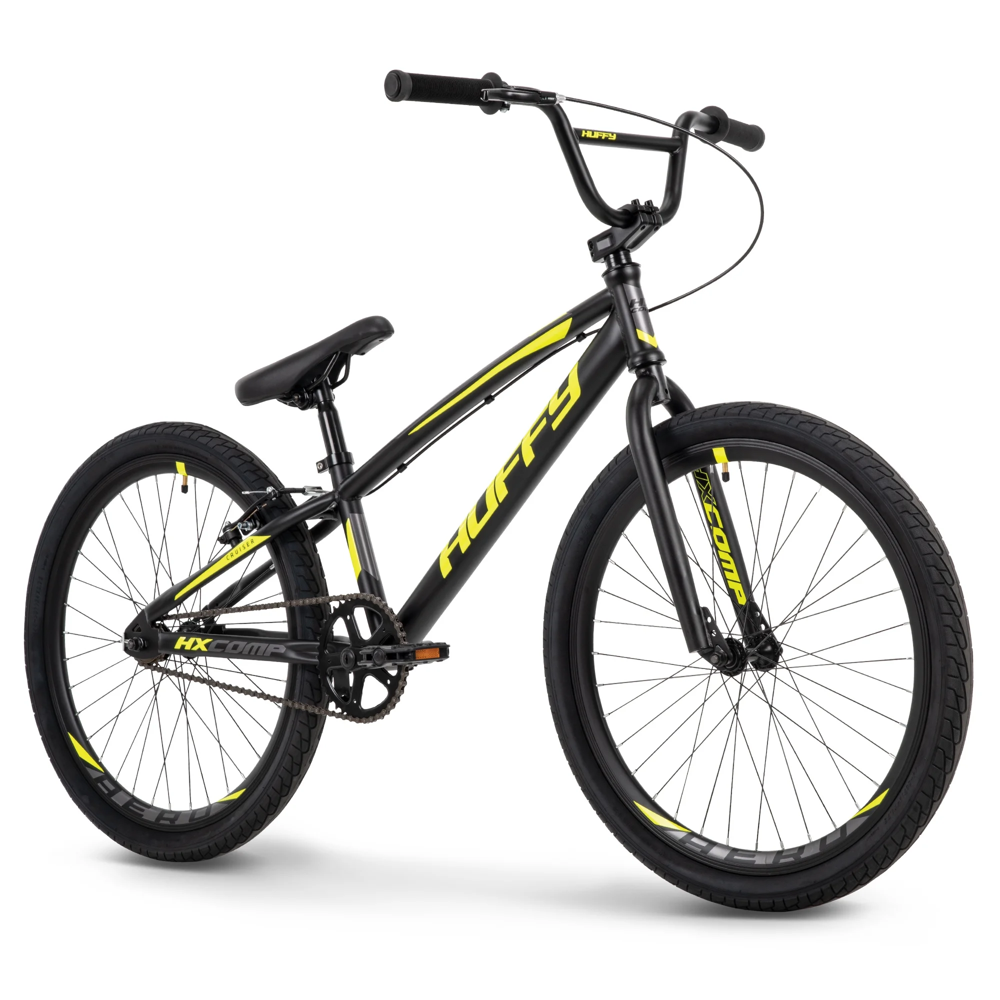

Kezdetek
Az országúti kerékpározás a 19. század végén kialakult sportág, főleg Európát hódította meg gyorsan: a legjelentősebb versenyek mind a mai napig elsősorban Franciaországban, Olaszországban, Spanyolországban, a Benelux államokban és Németországban zajlanak. Jó néhány verseny 100 éves múltra tekint vissza.

Jelen korszaka
A jelenkori kerékpáros sport rendkívül sokoldalú, dinamikusan fejlődő és széleskörű érdeklődést vonzó tevékenység. Az utóbbi évtizedekben jelentős technológiai és versenyformákbeli változásokon ment keresztül, amely lehetővé tette, hogy a sportág globálisan is még szélesebb közönséget érjen el. A kerékpáros sport ma már több ágra bontható, mindegyik sajátos jellegzetességekkel és kihívásokkal rendelkezik.
Verseny típusok
A kerékpár sportágai közé tartozik többek között:
- Országúti kerékpársport: A legismertebb és legnépszerűbb forma, amely hosszú távú versenyeket tartalmaz, mint például a:
- Tour de France
- Giro d'Italia
- Pályakerékpár: A versenyek zárt pályán zajlanak, és magukba foglalják az időfutamokat, gyorsasági versenyeket, illetve a csapatversenyeket. A pályakerékpáros sportok, mint a madison, sprinter versenyek és keirin, szorosan a taktikai érzékenységet és a fizikális felkészültséget igénylik.
- Mountain bike (MTB): Az extrém körülmények között zajló hegyikerékpáros versenyek, amelyek tartalmaznak cross-country (XC), downhill és enduro versenyeket. A hegyikerékpár a sebesség, a technikai tudás és a terephez való alkalmazkodás kombinációját követeli meg.
- BMX: Ez a versenyforma a trükkök és gyors kanyarok, ugrások kombinálása, és a versenyek általában zárt pályákon, kifejezetten rövid távokon zajlanak. A BMX egyre inkább az extrém sportok részeként jelenik meg, és a X Games egyik népszerű versenyszáma.
- Gravel és Cyclocross: Az utóbbi években ezek az alternatív versenytípusok is növekvő népszerűségnek örvendenek, mivel a kerékpárosok hosszú, szűk, gyakran földutakon zajló versenyeken mérhetik össze erejüket. A gravel versenyek különösen az aszfaltos és nem aszfaltos utak közötti kombinációval tűnnek ki.
| Kerékpár típusok | |
|---|---|
| Országúti kerékpár |  |
| Pályakerékpár |  |
| Mountain bike(MTB) | |
| BMX |  |
| Gravel és Cyclocross | |